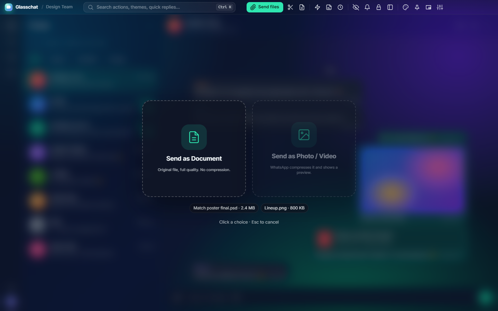

WhatsApp Web, in glass.
A fast, beautiful desktop app for WhatsApp Web. Drop files and send them in original quality, make it look the way you like, and lock it when you step away.
Demo data — every name and message in these screenshots is invented.
No more “Attach › Document” every single time.
Photos and videos keep their full quality. Pick the way that suits you — they all hand the file straight to WhatsApp.

Small things that make a big difference.
Glasschat is the regular WhatsApp Web page with a new skin and power tools on top.
Glass themes
Windows 11 Acrylic, Mica or Tabbed backdrop, nine themes, any accent color, wallpaper, blur, opacity and corner radius.
Beautiful fonts
Seven font choices — Inter, Segoe UI, Plus Jakarta, Figtree, Manrope, Outfit or WhatsApp's original.
App lock
A PIN screen at start, after you're idle, when minimized, or on Ctrl+L.
Do not disturb
Silence pop-ups now or on a daily schedule, optionally mute sounds, and hide message text in notifications.
Schedule & notes
Send a message later and keep private notes per chat, stored only on your PC.
Command palette
Ctrl+K for every action, theme, font and quick reply. Quick replies on Alt+1…9.
Privacy blur
Chats and messages stay blurred until you hover — great for screen sharing and open offices.
Lives in the tray
Unread badge, mini floating window, always-on-top and a global Ctrl+Alt+W hotkey.
Extensions
Drop your own CSS or JS files into a folder and toggle them, or edit live Custom CSS.
Nine themes. Light and dark.
Glasschat follows WhatsApp's own light or dark setting and recolors everything to match your theme.
A closer look.
Click any screenshot to enlarge it.
Up and running in a minute.
Download
Grab Glasschat-Setup (installer) or Glasschat-Portable (no install) from Releases.
Run it
The build isn't code-signed, so Windows SmartScreen may ask — choose More info › Run anyway.
Link your phone
Scan the QR code in WhatsApp › Linked devices, exactly like on web.whatsapp.com.
Shortcuts
| Command palette | Ctrl+K |
| Send files as documents | Ctrl+Shift+D |
| Paste image as document | Ctrl+Shift+V |
| Snip & send | Ctrl+Shift+S |
| Quick replies · insert 1–9 | Ctrl+Shift+Q Alt+1…9 |
| Chat notes | Ctrl+Shift+N |
| Lock now | Ctrl+L |
| Privacy blur | Ctrl+Shift+P |
| Focus · Always on top · Mini | Ctrl+Shift+F T M |
| Bold · Italic (selected text) | Ctrl+B Ctrl+I |
| Open chat 1–9 | Ctrl+1…9 |
| Show / hide from anywhere | Ctrl+Alt+W |
Questions
Is Glasschat official?
No. It's an independent, open-source project and is not affiliated with, endorsed by or sponsored by WhatsApp or Meta. It loads the official web.whatsapp.com page.
Is it safe? Where do my messages go?
Your messages stay end-to-end encrypted by WhatsApp. Glasschat has no server and no analytics. The page runs sandboxed; settings, notes and your PIN hash stay on your PC. The full source is on GitHub.
Does it use bots or unofficial APIs?
No — it's the normal WhatsApp Web page with a different look and helper tools. Scheduled messages are typed into the open page at the time you choose.
Something broke after a WhatsApp update.
WhatsApp changes its web page often. Please open an issue; meanwhile you can patch it with Custom CSS in Settings › Extensions.
Mac or Linux?
Glasschat currently targets Windows 10 and 11 (it uses the Windows 11 glass backdrop). It's built with Electron, so ports are possible — contributions welcome.
Built on great open source.
Make WhatsApp feel like yours.
Free forever, open source, and it takes a minute to set up.